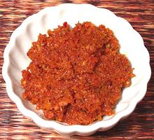

 |
Panang Curry PasteThailand | ||||
| Makes: Effort: Sched: DoAhead: |
10 oz *** 2 hrs Total |
Penang is a Malaysian island but the style of curry paste originating there has been enthusiastically adopted by the Thai, and I also consider it quite highly. | |||
|
|
1 1/2 3 2 5 15 3/4 1 1 1 30 3 1 1 |
t t T t in t T cl oz t t |
Coriander Seeds Cumin Seeds Peanuts, raw (1) Peppercorns California Chili (2) Thai Chili dried (3) Galangal (4) Lemon Grass (5) Kafir Lime peel (6) Cilantro Root (7) Garlic Shallots Salt Shrimp Paste (8) |
This recipe is tedious to make, but if made with no added liquid and the specified amount of salt, it will keep for months in the refrigerator, longer frozen. It is traditionally made by pounding in a large stone mortar. It can be made in a mini-prep food processor (with lots of stopping to scrape down the sides), but won't be as smooth. Lemon grass in particular laughes at food processors. I use the mortar and a spice grinder. I pound each non-powdered ingredient separately for best control, then pound the whole mess together to blend.
|